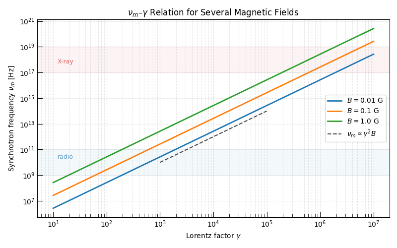
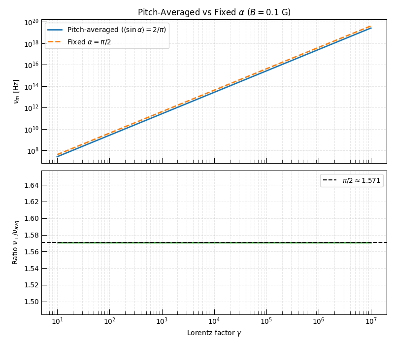
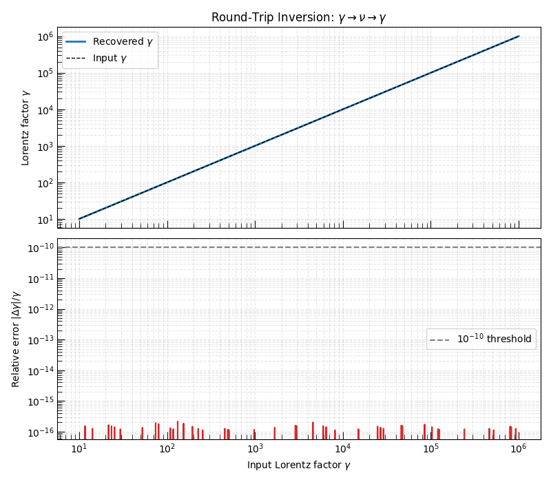

Note
Go to the end to download the full example code.
The ν–γ–B Relation and Pitch-Angle Effects#
Every synchrotron emitting electron radiates near its characteristic synchrotron frequency \(\nu_m\), which depends on the electron Lorentz factor \(\gamma\) and the local magnetic field \(B\):
where the pitch-angle average gives \(\langle\sin\alpha\rangle = 2/\pi\) for an isotropic distribution. The inverse relation — recovering \(\gamma\) from an observed frequency \(\nu\) and a known \(B\) — is central to synchrotron closure relations used in GRB and supernova afterglow modeling.
This example covers:
How \(\nu_m\) scales with \(\gamma\) for several magnetic field strengths (the \(\nu_m \propto \gamma^2 B\) relation).
The difference between pitch-averaged and fixed-pitch-angle formulae.
A round-trip inversion test: \(\gamma \to \nu \to \gamma\).
For the underlying theory see Synchrotron Radiation Theory.
Relevant API References#
import matplotlib.pyplot as plt
import numpy as np
from astropy import units as u
from triceratops.radiation.synchrotron import (
compute_gyrofrequency,
compute_nu_critical,
compute_synchrotron_frequency,
compute_synchrotron_gamma,
)
from triceratops.utils.plot_utils import set_plot_style
Physical Setup#
We explore three magnetic field strengths spanning the range encountered in radio-emitting astrophysical transients: from SNe radio nebulae (\(B \sim 0.01\) G) to compact GRB afterglows (\(B \sim 1\) G).
ν_m vs γ for Several Magnetic Fields#
The synchrotron characteristic frequency grows as \(\nu_m \propto \gamma^2 B\), a consequence of relativistic beaming collimating the emission into a cone of half-angle \(1/\gamma\), compressing the apparent pulse duration and boosting the frequency by \(\gamma^2\).
In log–log space this appears as a slope-2 line whose intercept shifts by \(\log B\).
set_plot_style()
fig, ax = plt.subplots(figsize=(8, 5))
for B, label, color in zip(B_values, B_labels, colors):
nu_m = np.array([compute_synchrotron_frequency(g, B, pitch_average=True).to_value(u.Hz) for g in gamma_arr])
ax.loglog(gamma_arr, nu_m, lw=2, color=color, label=label)
# Annotate ν ∝ γ²B scaling
gamma_ref = np.array([1e3, 1e5])
nu_guide = 1e10 * (gamma_ref / 1e3) ** 2
ax.loglog(gamma_ref, nu_guide, ls="--", color="k", lw=1.5, alpha=0.7, label=r"$\nu_m \propto \gamma^2 B$")
ax.set_xlabel(r"Lorentz factor $\gamma$")
ax.set_ylabel(r"Synchrotron frequency $\nu_m$ [Hz]")
ax.set_title(r"$\nu_m$–$\gamma$ Relation for Several Magnetic Fields")
ax.legend()
ax.grid(True, which="both", ls="--", alpha=0.3)
# Mark common radio/X-ray bands
ax.axhspan(1e9, 1e11, alpha=0.05, color="C0")
ax.text(12, 2e10, "radio", color="C0", alpha=0.7, fontsize=9)
ax.axhspan(1e17, 1e19, alpha=0.05, color="C3")
ax.text(12, 5e17, "X-ray", color="C3", alpha=0.7, fontsize=9)
plt.tight_layout()
plt.show()

Pitch-Averaged vs Fixed Pitch Angle#
The pitch-averaging approximation replaces the individual electron pitch angle \(\alpha\) with the isotropic average \(\langle\sin\alpha\rangle = 2/\pi\), which introduces a factor of \(2/\pi \approx 0.637\) relative to the perpendicular (\(\alpha = \pi/2\)) case.
For an isotropic electron pitch-angle distribution this is the correct ensemble-averaged frequency. Individual electrons with \(\alpha \neq \pi/2\) radiate at a different frequency by a factor of \(\sin\alpha\).
Warning
Using the perpendicular formula (\(\alpha = \pi/2\)) without
pitch-angle averaging overestimates the characteristic frequency by a factor
\(\pi/2 \approx 1.57\). Always use pitch_average=True (the default)
unless the electron pitch-angle distribution is explicitly non-isotropic.
B_demo = 0.1 * u.G
nu_avg = np.array([compute_synchrotron_frequency(g, B_demo, pitch_average=True).to_value(u.Hz) for g in gamma_arr])
nu_perp = np.array(
[compute_synchrotron_frequency(g, B_demo, alpha=np.pi / 2, pitch_average=False).to_value(u.Hz) for g in gamma_arr]
)
ratio = nu_perp / nu_avg
expected_ratio = np.pi / 2
print(f"Mean ratio ν_perp / ν_avg = {np.mean(ratio):.4f} (expected π/2 = {expected_ratio:.4f})")
fig, axes = plt.subplots(2, 1, figsize=(8, 7), sharex=True)
axes[0].loglog(gamma_arr, nu_avg, lw=2, label=r"Pitch-averaged ($\langle\sin\alpha\rangle = 2/\pi$)")
axes[0].loglog(gamma_arr, nu_perp, lw=2, ls="--", label=r"Fixed $\alpha = \pi/2$")
axes[0].set_ylabel(r"$\nu_m$ [Hz]")
axes[0].set_title(rf"Pitch-Averaged vs Fixed $\alpha$ ($B = {B_demo.value}$ G)")
axes[0].legend()
axes[0].grid(True, which="both", ls="--", alpha=0.3)
axes[1].semilogx(gamma_arr, ratio, color="C2", lw=2)
axes[1].axhline(np.pi / 2, ls="--", color="k", label=r"$\pi/2 \approx 1.571$")
axes[1].set_xlabel(r"Lorentz factor $\gamma$")
axes[1].set_ylabel(r"Ratio $\nu_\perp / \nu_{\rm avg}$")
axes[1].legend()
axes[1].grid(True, which="both", ls="--", alpha=0.3)
plt.tight_layout()
plt.show()

Mean ratio ν_perp / ν_avg = 1.5708 (expected π/2 = 1.5708)
Round-Trip Inversion: ν → γ → ν#
compute_synchrotron_gamma() is the analytic
inverse of compute_synchrotron_frequency().
Given an observed frequency \(\nu\) and a magnetic field \(B\), it
returns the Lorentz factor \(\gamma\) of the electron that radiates at
peak power near \(\nu\).
A round-trip test — computing \(\nu\) from \(\gamma\), then inverting back to \(\gamma\) — should recover the input to machine precision.
B_roundtrip = 0.5 * u.G
gamma_test = np.geomspace(10, 1e6, 300)
# Forward: γ → ν
nu_test = np.array(
[compute_synchrotron_frequency(g, B_roundtrip, pitch_average=True).to_value(u.Hz) for g in gamma_test]
)
# Inverse: ν → γ
gamma_recovered = np.array([compute_synchrotron_gamma(nui * u.Hz, B_roundtrip, pitch_average=True) for nui in nu_test])
rel_error = np.abs(gamma_recovered - gamma_test) / gamma_test
max_err = np.max(rel_error)
print(f"Round-trip maximum relative error: {max_err:.2e}")
fig, axes = plt.subplots(2, 1, figsize=(8, 7), sharex=True)
axes[0].loglog(gamma_test, gamma_recovered, lw=2, label=r"Recovered $\gamma$")
axes[0].loglog(gamma_test, gamma_test, ls="--", color="k", lw=1, label="Input $\\gamma$")
axes[0].set_ylabel(r"Lorentz factor $\gamma$")
axes[0].set_title(r"Round-Trip Inversion: $\gamma \to \nu \to \gamma$")
axes[0].legend()
axes[0].grid(True, which="both", ls="--", alpha=0.3)
axes[1].loglog(gamma_test, rel_error, color="C3", lw=1.5)
axes[1].axhline(1e-10, ls="--", color="gray", label=r"$10^{-10}$ threshold")
axes[1].set_xlabel(r"Input Lorentz factor $\gamma$")
axes[1].set_ylabel(r"Relative error $|\Delta\gamma| / \gamma$")
axes[1].legend()
axes[1].grid(True, which="both", ls="--", alpha=0.3)
plt.tight_layout()
plt.show()

Round-trip maximum relative error: 2.15e-16
Discussion#
The \(\nu_m \propto \gamma^2 B\) relation is one of the most important
equations in synchrotron theory. Together with the inverse function
compute_synchrotron_gamma(), it underpins the
closure relations that convert phenomenological SED parameters (break
frequencies, peak fluxes) into physical quantities (magnetic field, emitting
radius, Lorentz factors).
Key takeaways:
A factor of 100 increase in \(\gamma\) shifts the emission peak by \(10^4\) in frequency. This means electrons with \(\gamma \sim 100\) are responsible for GHz radio emission while \(\gamma \sim 10^6\) electrons emit at X-ray energies, all in the same \(B \sim 0.1\) G field.
The pitch-averaging factor \(2/\pi\) is a systematic correction that must be applied consistently throughout a model.
The forward and inverse functions are analytic inverses of each other to better than \(10^{-10}\) relative precision.
See Synchrotron Radiation Theory for the full derivation of these relations and their connection to the SED closure implemented in the forward-closure example.
Total running time of the script: (0 minutes 1.448 seconds)